Surface Flow
Velocity and Curl Noise
- Create a particle system.
- Make particles stick to the surface.
- Flow particles downhill.
- Apply curl noise.
This is the sixth tutorial in a series about pseudorandom surfaces. In it we will add a particle system that flows across our surfaces.
This tutorial is made with Unity 2020.3.38f1.
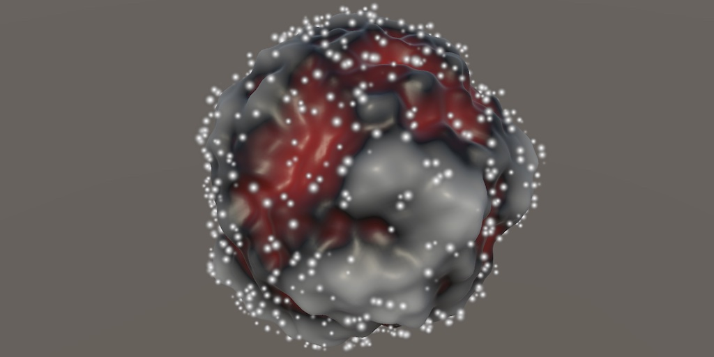
Particle System
This series has been about generating procedural surfaces, but in this final installment we'll look a bit further and deal with movement across these surfaces. We'll illustrate this by creating a particle system and have its particles flow across the surface defined by the noise.
Particle System Component
We'll control both the surface and the particles via our Procedural Surface game object. Add a particle system component to it via Component / Effects / Particle System.
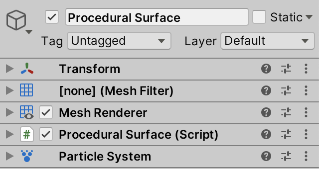
A particle system can be controlled via separate modules, which are shown in its inspector. We'll use the main module at the top, plus Emission, Shape, Color over Lifetime, Size over Lifetime, and Renderer. Enable all these and then hide the rest by disabling Show all modules via the plus + menu at the top right of the module list.
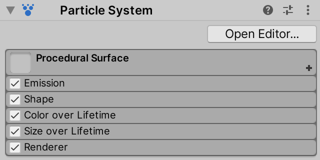
Currently the system has no material so all its particles appear as pink quads. We'll use default billboard particles with the default material, which we can set via the Renderer module. We need to use the Default-Particle material. All other settings can remain at their default values.
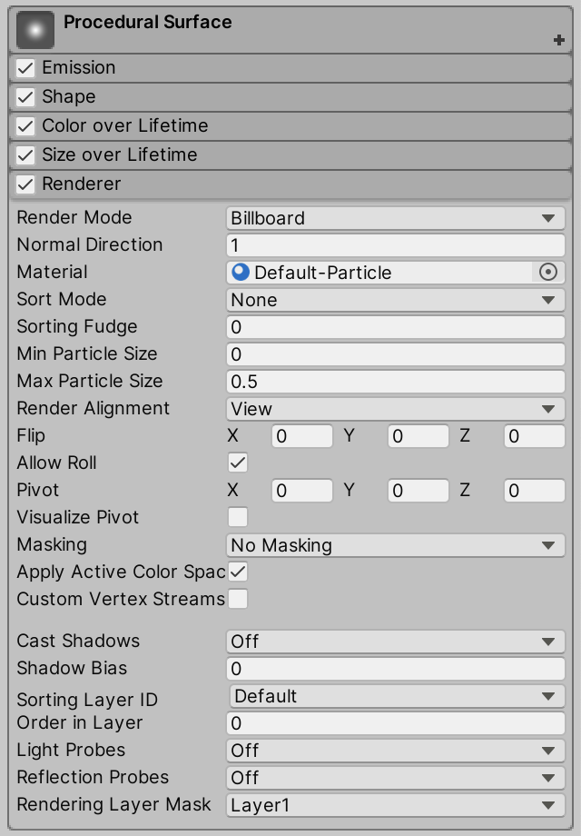
We'll change a few settings of the main module at the top of the list. Set Start Lifetime to Random Between Two Constants with values 2 and 5. Reduce both the Start Speed and the Start Size to 0.1. A value of 1000 for Max Particles is fine.
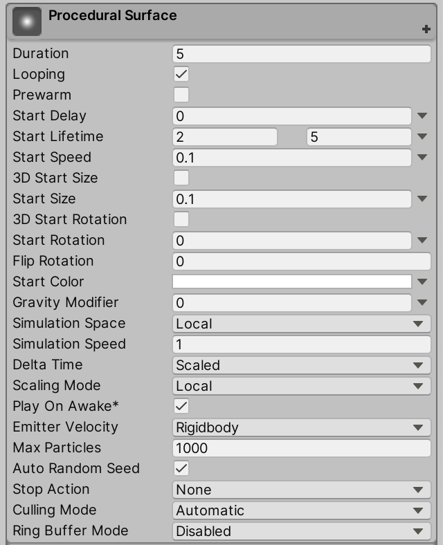
Increase the Rate over Time setting of Emission to 1,000,000. This makes it so the system will always display the maximum amount of particles and immediately replace particles that perish with new ones.
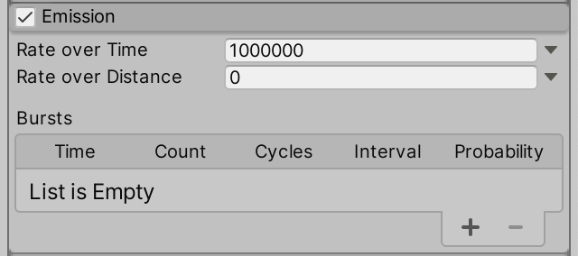
To make the appearance and disappearance of particles smooth adjust the gradient of Color over Lifetime so its end points have an alpha of zero. Introduce two new alpha values at 15% and 85%, both set to 255.
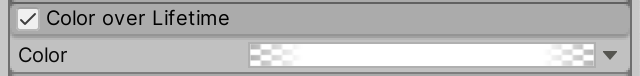
Let's also animate the particle size, by adjusting the curve of Size over Lifetime. Set the value of the end points to 0.5 and add a new point at 0.25 with value 1. Make the tangents of all these points flat.
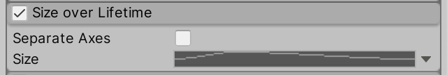
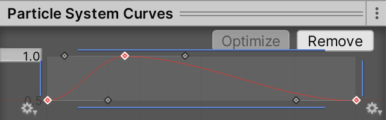
Finally, we have to set up the Shape module. We initially do this for a Sphere shape, with its Radius Thickness set to zero. Also, set Randomize Direction to 1. This will make the particles move in arbitrary directions.
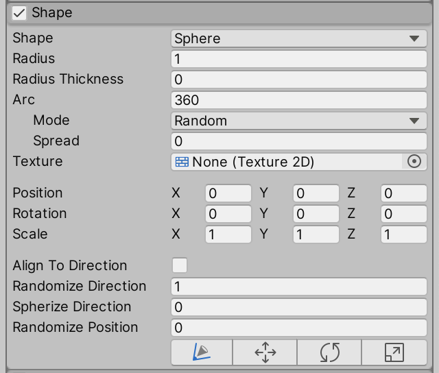
Sphere or Rectangle
As we can generate either planar or spherical surfaces we should also configure the system to spawn in a rectangle. Change Shape to Rectangle and set its X Rotation to 90°.
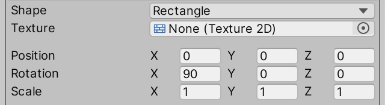
We have to change the shape at runtime depending on what mesh type we are using. We already know how to check whether it is a plane. Add a convenient property for this to ProceduralSurface, because we're going to check this more than twice now.
bool IsPlane => meshType < MeshType.CubeSphere;
…
void Update () {
…
if (material == MaterialMode.Displacement) {
materials[(int)MaterialMode.Displacement].SetFloat(
materialIsPlaneId, IsPlane ? 1f : 0f
);
}
…
}
void GenerateMesh () {
…
surfaceJobs[(int)noiseType, dimensions - 1](
meshData, resolution, noiseSettings, domain, displacement, IsPlane,
meshJobs[(int)meshType](
mesh, meshData, resolution, default,
Vector3.one * Mathf.Abs(displacement), true
)
).Complete();
…
}
Store a reference to the particle system in a field and set it in Awake. I'll refer to it as the flow system because we use it to flow particles across the surface.
ParticleSystem flowSystem;
…
void Awake () {
…
flowSystem = GetComponent<ParticleSystem>();
}
Now we can set the system's shape at the end of Update. We do this by first retrieving the system's shape module. This is a ParticleSystem.ShapeModule struct that acts as a proxy for the underlying particle system configuration. Then we can set its shapeType property to either rectangle or sphere.
void Update () {
…
ParticleSystem.ShapeModule shapeModule = flowSystem.shape;
shapeModule.shapeType =
IsPlane ? ParticleSystemShapeType.Rectangle : ParticleSystemShapeType.Sphere;
}
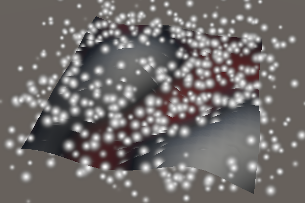
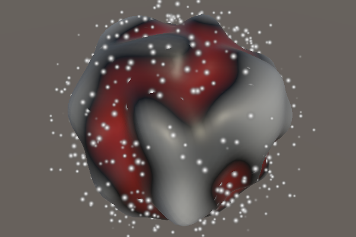
Particles Job
The particle system controls its particles, keeping track of their life and moving them in arbitrary directions, according to how we configured it. To make the particles stick to the surface we have to adjust their positions after the system updates itself. It is possible to do this via a Burst job.
To manipulate a particle system we need to use a specific kind of job. There are three interfaces that we could implement, found in the UnityEngine.ParticleSystemJobs namespace. We'll implement IJobParticleSystemParallelForBatch. Create a FlowJob struct type that implements it, putting its asset in the Surface folder.
using Unity.Burst;
using Unity.Collections;
using Unity.Jobs;
using Unity.Mathematics;
using UnityEngine;
using UnityEngine.ParticleSystemJobs;
using static Unity.Mathematics.math;
using static Noise;
[BurstCompile(FloatPrecision.Standard, FloatMode.Fast, CompileSynchronously = true)]
public struct FlowJob : IJobParticleSystemParallelForBatch {}
The interface requires us to implement an Execute method with three parameters. The first parameter is a ParticleSystemJobData struct that gives us access to the particle data via native arrays. The second parameter is the particle index where this job execution starts. And the third parameter is the count, indicating how many particles we are supposed to process. We initially make it do nothing, leaving the particles are they are.
public void Execute (ParticleSystemJobData data, int startIndex, int count) { }
Next, make the job generic and add all fields required to make it work with our noise, similar to SurfaceJob. The only exception is that we do not need to specify native arrays to work with, as those are provided via the ParticleSystemJobData parameter.
public struct FlowJob<N> : IJobParticleSystemParallelForBatch where N : struct, INoise {
Settings settings;
float3x4 domainTRS;
float3x3 derivativeMatrix;
float displacement;
bool isPlane;
public void Execute (ParticleSystemJobData data, int startIndex, int count) { }
}
Still using the same approach, add a static ScheduleParallel method and accompanying delegate type. In this case we schedule the job by invoking ScheduleBatch on it, with the particle system to act on and the batch count as arguments. The particle system has to be a parameter of ScheduleParallel. We set the batch count to four, so we can process four particles at once using our vectorized noise code.
public struct FlowJob<N> : IJobParticleSystemParallelForBatch where N : struct, INoise {
…
public static JobHandle ScheduleParallel (
ParticleSystem system,
Settings settings, SpaceTRS domain, float displacement, bool isPlane
) => new FlowJob<N>() {
settings = settings,
domainTRS = domain.Matrix,
derivativeMatrix = domain.DerivativeMatrix,
displacement = displacement,
isPlane = isPlane
}.ScheduleBatch(system, 4);
}
public delegate JobHandle FlowJobScheduleDelegate (
ParticleSystem system,
Settings settings, SpaceTRS domain, float displacement, bool isPlane
);
With the job functional although still doing nothing, add a static array to ProceduralSurface containing all specific flow job types that we need. Do this by copying the surface jobs array and changing the job and delegate types.
static FlowJobScheduleDelegate[,] flowJobs = {
{
FlowJob<Lattice1D<LatticeNormal, Perlin>>.ScheduleParallel,
FlowJob<Lattice2D<LatticeNormal, Perlin>>.ScheduleParallel,
FlowJob<Lattice3D<LatticeNormal, Perlin>>.ScheduleParallel
},
…
};
The last step to run the job is to schedule it. We have to schedule the job so that it runs after the particle system has updated itself. There is no job handle available for this. Instead, we have to schedule our job in a special OnParticleUpdateJobScheduled Unity method. This method gets invoked on a component if their game object has a playing particle system.
void OnParticleUpdateJobScheduled () {
flowJobs[(int)noiseType, dimensions - 1](
flowSystem, noiseSettings, domain, displacement, IsPlane
);
}
Adjusting Particle Positions
Our flow job now runs, acting on up to four consecutive particles at a time, in parallel. To make it do something we need to retrieve the appropriate native arrays from the data that gets passed to FlowJob.Execute.
We begin by only considering planes, leaving spheres for later. So we only need to adjust the Y coordinates of the particles. ParticleSystemJobData has a positions property that gives us access to the position data. This data consists of three separate float native arrays, one per coordinate, instead of a single float3 array. The positions.y property gives us access to the native array containing the Y coordinates.
public void Execute (ParticleSystemJobData data, int startIndex, int count) {
NativeArray<float> py = data.positions.y;
}
Although we ask Unity to run our job so that it acts on four particles at once, we might end up with fewer particles, either because there are less than four alive or because the total amount of particles isn't divisible by four. So the safest way to adjust the particles is looping through them based on the start index and count that we got. Set their Y coordinates to zero so they snap to the XZ plane.
NativeArray<float> py = data.positions.y;
for(int i = 0; i < count; i++) {
py[startIndex + i] = 0f;
}
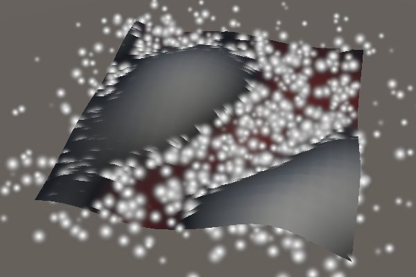
This works because the particle system first updates itself, applying the arbitrary velocities—which likely have a vertical component—and then our job sets the Y coordinates back to zero.
Vectorization
The idea is that we vectorize our flow job, which is why we set the batch count to four. The particle system data structure also makes this easy, because the position components are stored in separate native arrays. The naive approach would be to reinterpret the Y coordinates as a float4 native array, so we can set four particles to zero via a single assignment.
NativeArray<float4> py = data.positions.y.Reinterpret<float4>(4);//for(int i = 0; i < count; i++) {// py[startIndex + i] = 0f;//}py[startIndex / 4] = 0f;
This might even appear to work. If Max Particles is divisible by four our particle system spawns particles fast enough to keep them all alive. If you set the max to something not divisible by four—like 1001—it might still appear to work, but if Burst safety checks are on then you'll get error messages that indicate that native array aliasing failed. This means that reinterpreting the arrays causes an overshoot, making us access memory that is out of bounds. This can appear to work because that memory is still part of the native particle system data, but what we're doing with it is nonsensical.
We cannot correctly reinterpret the array if its length isn't divisible by four. But we don't need to access the entire array, we only need the part with the relevant four particles. We can isolate that part by taking a slice of the array, by invoking Slice on it with the start index and four as arguments. That gives us a NativeSlice<float>, on which we can invoke SliceConvert<float4> to get a NativeSlice<float4> with a single element. This doesn't change any data, just how we interpret it.
NativeSlice<float4> py = data.positions.y.Slice(startIndex, 4).SliceConvert<float4>(); py[0] = 0f;
Trying it now will give us an out-of-range error instead of an aliasing-failure error if the max isn't divisible by four. But this only happens when Execute is invoked with a count less that four, instead of all the time. In all other cases it works without issue.
The simplest way to deal with the out-of-range problem is to abort when the count is not exactly four, so that's what we'll do. This means that up to three particles could get skipped, but this will only happen when the max isn't divisible by four or when the emission rate is too low to keep all particles alive.
if (count != 4) {
return;
}
NativeSlice<float4> py =
data.positions.y.Slice(startIndex, 4).SliceConvert<float4>();
Now it will work without issues, so you could turn safety checks off.
Sticking to the Surface
To make the particles stick to the surface instead of the XZ plane we have to sample the noise, which means that we need to access the X and Z coordinates of the particles. We can do this the same way that we gained access to the Y coordinates. Create a convenient GetSlice method for this, producing a vectorized slice given a float native array and a start index.
NativeSlice<float4> GetSlice (NativeArray<float> data, int i) => data.Slice(i, 4).SliceConvert<float4>();
Then retrieve all three position components in Execute.
NativeSlice<float4> px = GetSlice(data.positions.x, startIndex), py = GetSlice(data.positions.y, startIndex), pz = GetSlice(data.positions.z, startIndex);
Use X and Z to construct a vectorized position, use it to sample the noise, and use the result to set Y.
float4x3 p = float4x3(px[0], 0f, pz[0]); Sample4 noise = GetFractalNoise<N>( domainTRS.TransformVectors(p), settings ) * displacement; py[0] = noise.v;
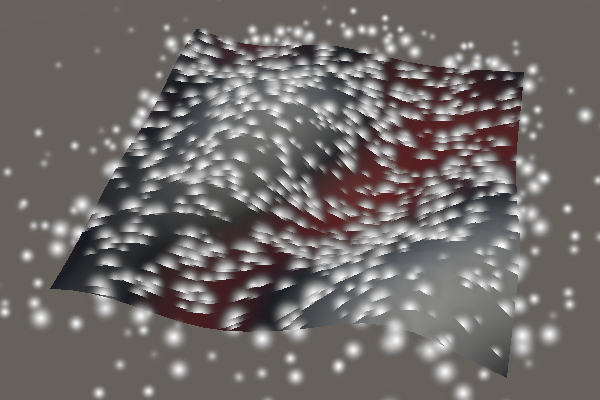
This makes the particles intersect the surface. To keep them above the surface we'll add half the particle's maximum size. We set Start Size to 0.1 so we'll use 0.05.
py[0] = noise.v + 0.05f;
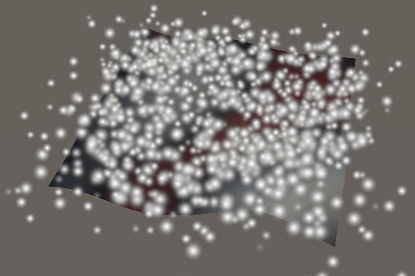
Clamping to Rectangle
The particles now stick to the noise surface, but they can still move away from the plane mesh. We'll fix this by terminating particles that move too far away, which happens when their absolute X or Z coordinate exceeds ½. This matches the square mesh types and is close enough for the other planar mesh types.
Terminating a particle is done by settings its alivePercent to 100. They will still be visible this frame, but the particle system will recycle them during the next update.
NativeSlice<float4> life = GetSlice(data.aliveTimePercent, startIndex); float4x3 p = float4x3(px[0], 0f, pz[0]); life[0] = select(life[0], 100f, abs(p.c0) > 0.5f | abs(p.c2) > 0.5f);
Sticking to the Sphere
With the plane covered we move on to the spherical surfaces. First, make the plane-related code conditional. Also use the particle components of the entire vectorized position, but then set Y back to zero for planes.
float4x3 p = float4x3(px[0], py[0], pz[0]);
if (isPlane) {
p.c1 = 0f;
life[0] = select(life[0], 100f, abs(p.c0) > 0.5f | abs(p.c2) > 0.5f);
}
Sample4 noise = GetFractalNoise<N>(
domainTRS.TransformVectors(p), settings
) * displacement;
if (isPlane) {
py[0] = noise.v + 0.05f;
}
In case of a sphere we have to normalize the position before sampling the noise.
if (isPlane) {
p.c1 = 0f;
life[0] = select(life[0], 100f, abs(p.c0) > 0.5f | abs(p.c2) > 0.5f);
}
else {
p = p.NormalizeRows();
}
And we have to use the noise to scale the position afterwards. Again we have to add 0.05 to keep the particles above the surface, which I added separately.
if (isPlane) {
py[0] = noise.v + 0.05f;
}
else {
noise.v += 1f;
noise.v += 0.05f;
px[0] = p.c0 * noise.v;
py[0] = p.c1 * noise.v;
pz[0] = p.c2 * noise.v;
}
Flowing Downhill
Keeping the particles on top of the surface is not the only thing that we can do. We can also make their movement take the surface into account, for example by making them flow downhill instead of in arbitrary directions.
Flow Mode
Add a flow mode configuration option to ProceduralSurface, initially supporting two options: off and downhill.
public enum FlowMode { Off, Downhill }
[SerializeField]
FlowMode flowMode;
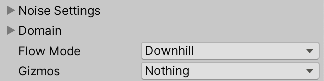
When the flow is turned off we'll shut down the particle system, only showing the surface. We do that by invoking Stop on the system in Update when appropriate. If the flow is on then we invoke Play to start it up. If it is already playing invoking Play has no effect. We also only have to set the shape when flow is enabled.
void Update () {
…
if (flowMode == FlowMode.Off) {
flowSystem.Stop();
}
else {
flowSystem.Play();
ParticleSystem.ShapeModule shapeModule = flowSystem.shape;
shapeModule.shapeType = IsPlane ?
ParticleSystemShapeType.Rectangle : ParticleSystemShapeType.Sphere;
}
}
Invoking Stop without arguments turns off the particle emission, but existing particles still stick around until their time is up. To switch off the entire system at once pass ParticleSystemStopBehavior.StopEmittingAndClear as a second argument. The first argument indicates whether any nested particle systems should also be stopped, which is irrelevant in our case so we use the default true option.
flowSystem.Stop(true, ParticleSystemStopBehavior.StopEmittingAndClear);
Now we can turn off the flow while in play mode, but doing so will generate errors about slice failures during that frame. It turns out that OnParticleUpdateJobScheduled will get invoked during that same frame even though the particles have been cleared. Our jobs still run as if there were particles alive, even though the data length has been set to zero. This is a particle system bug, but we can avoid it by only scheduling our flow job if the particle system isn't turned off.
void OnParticleUpdateJobScheduled () {
if (flowMode != FlowMode.Off) {
flowJobs[(int)noiseType, dimensions - 1](
flowSystem, noiseSettings, domain, displacement, IsPlane
);
}
}
Particle Velocity
As we'll control the velocities we no longer need the particle system to generate random velocities. So set Main / Start Speed and Shape / Randomize Direction to zero.
We can access the velocities of the particles in the same way that we access their positions in FlowJob.Execute, by getting three vectorized slices.
NativeSlice<float4> px = GetSlice(data.positions.x, startIndex), py = GetSlice(data.positions.y, startIndex), pz = GetSlice(data.positions.z, startIndex); NativeSlice<float4> vx = GetSlice(data.velocities.x, startIndex), vy = GetSlice(data.velocities.y, startIndex), vz = GetSlice(data.velocities.z, startIndex);
Derivatives as Velocity
As the noise derivatives match the rate of change of the surface it is possible to interpret them as a velocity vector. Before we do that we should make sure that the domain transformation is also applied to the derivatives.
Sample4 noise = GetFractalNoise<N>( domainTRS.TransformVectors(p), settings ) * displacement; noise.Derivatives = derivativeMatrix.TransformVectors(noise.Derivatives);
In the case of a plane we only have to set the X and Z components of the velocity. A vertical velocity isn't needed because we override the Y position after the particle system moved the particles. Begin by directly using `[[d_x],[d_z]]` as the planar XZ velocity, where `d` is the derivative of the noise.
if (isPlane) {
vx[0] = noise.dx;
vz[0] = noise.dz;
py[0] = noise.v + 0.05f;
}
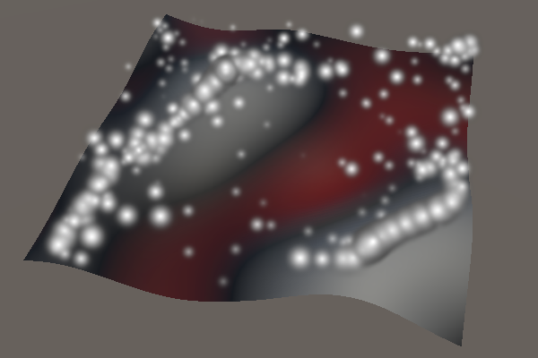
This causes the particles to flow uphill, which is where the derivative vectors point to. So we have to negate the derivatives to get a downhill flow.
vx[0] = -noise.dx; vz[0] = -noise.dz;
The particles now flow downhill and remain stuck at the local minima of the noise. The speed of the particles matches the rate of change of the noise, which matches its steepness, so the flow appears physically plausible.
Downhill on a Sphere
In the case of a sphere we have to first fix the derivatives so they match the adjusted sphere radius, like we did in the previous tutorial. The extra 0.05 offset to keep the particles on top of the noise should not be part of this.
else {
noise.v += 1f;
noise.dx /= noise.v;
noise.dy /= noise.v;
noise.dz /= noise.v;
noise.v += 0.05f;
px[0] = p.c0 * noise.v;
py[0] = p.c1 * noise.v;
pz[0] = p.c2 * noise.v;
}
Then we again find the correct derivatives by projecting them onto the tangent plane. As we need the derivatives themselves we do not subtract then from the normal vector here.
noise.dz /= noise.v; float4 pd = p.c0 * noise.dx + p.c1 * noise.dy + p.c2 * noise.dz; noise.dx -= pd * p.c0; noise.dy -= pd * p.c1; noise.dz -= pd * p.c2;
Like for the plane we use the negative derivatives for the particle velocity.
noise.dz -= pd * p.c2; vx[0] = -noise.dx; vy[0] = -noise.dy; vz[0] = -noise.dz;
The result is the same as for a plane, except that downhill is toward the center of the sphere.
Curl Noise
We wrap up by adding a second kind of flow: a curling movement that simulates a swirling turbulent gas or liquid. When combined with noise it is known as curl noise.
Curl Flow Mode
Add a field to indicate whether we're generating curl flow to FlowJob, including a ScheduleParallel parameter to control it.
public struct FlowJob<N> : IJobParticleSystemParallelForBatch where N : struct, INoise {
…
bool isPlane, isCurl;
…
public static JobHandle ScheduleParallel (
ParticleSystem system,
Settings settings, SpaceTRS domain, float displacement, bool isPlane, bool isCurl
) => new FlowJob<N>() {
…
isPlane = isPlane,
isCurl = isCurl
}.ScheduleBatch(system, 4);
}
public delegate JobHandle FlowJobScheduleDelegate (
ParticleSystem system,
Settings settings, SpaceTRS domain, float displacement, bool isPlane, bool isCurl
);
Add an entry for it to FlowMode and add the required argument when scheduling the flow job.
public enum FlowMode { Off, Curl, Downhill }
…
void OnParticleUpdateJobScheduled () {
if (flowMode != FlowMode.Off) {
flowJobs[(int)noiseType, dimensions - 1](
flowSystem, noiseSettings, domain, displacement,
IsPlane, flowMode == FlowMode.Curl
);
}
}
2D Curl
The idea of the curl operator is that it takes a smooth vector field and turns into a divergence-free flow vector field. In 2D it does this by rotating the vectors 90°. So we can generate curling flow for the plane by using `[[d_z],[-d_x]]` for the velocity.
if (isPlane) {
if (isCurl) {
vx[0] = noise.dz;
vz[0] = -noise.dx;
}
else {
vx[0] = -noise.dx;
vz[0] = -noise.dz;
}
py[0] = noise.v + 0.05f;
}
This causes particles to flow along the contour lines of the noise. Where the noise is negative they flow clockwise and where it is positive they flow counterclockwise. Negating the velocity would be equivalent to rotating in the opposite direction, reversing the flow.
Curl on a Sphere
The curl operator for a 3D vector field is more complex, because there are three rotation axes instead of just one. However, in the case of our sphere we're not working with a 3D field but a 2D field wrapped around the surface of a sphere. So we still only have a single rotation axis. In this case the axis is the unit sphere's normal vector instead of the Y axis. We have to rotate the tangent-plane-projected derivatives 90° around it. Thus we can get the desired result by taking the cross product of the normal and derivative vectors.
if (isCurl) {
vx[0] = p.c1 * noise.dz - p.c2 * noise.dy;
vy[0] = p.c2 * noise.dx - p.c0 * noise.dz;
vz[0] = p.c0 * noise.dy - p.c1 * noise.dx;
}
else {
vx[0] = -noise.dx;
vy[0] = -noise.dy;
vz[0] = -noise.dz;
}
This is the end of the Pseudorandom Surfaces tutorial series. Want to know when another tutorial gets released? Keep tabs on my Patreon page!